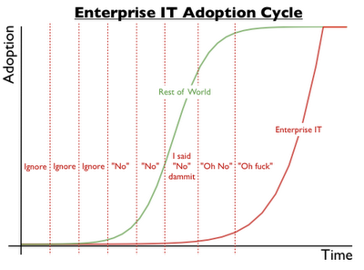
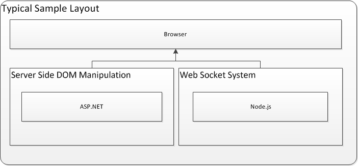
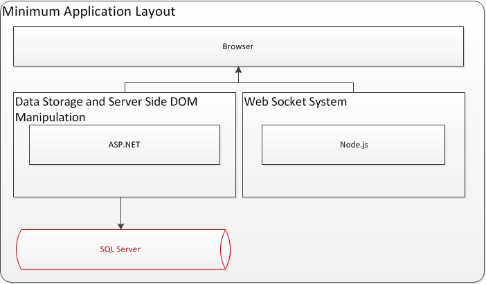
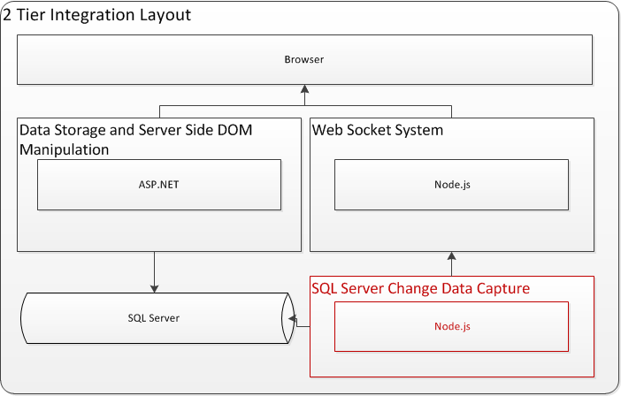
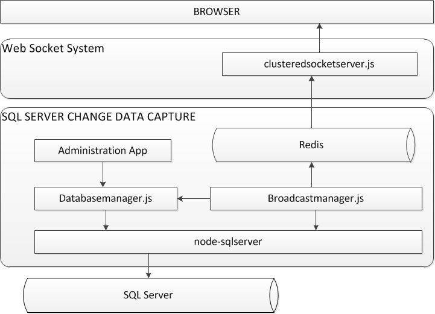
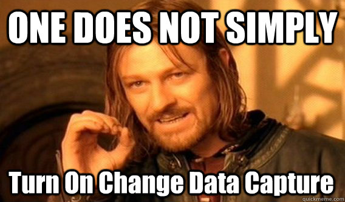
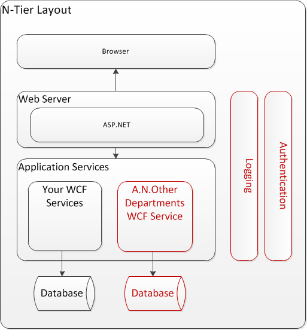
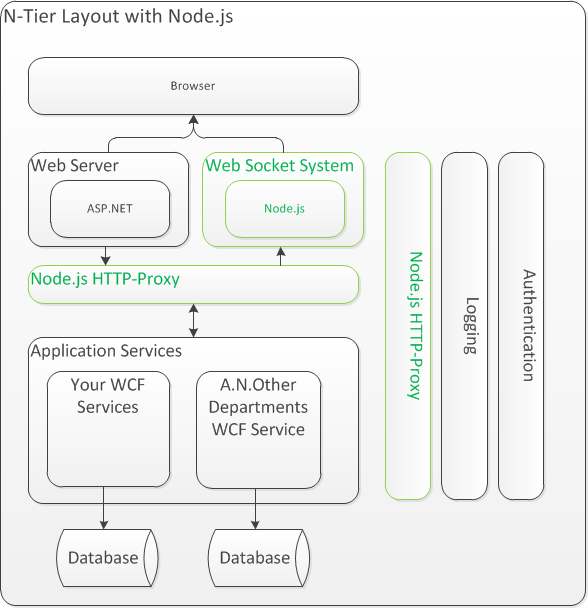

@antonwhalley
https://www.github.com/No9
Node in the Microsoft Apps that you have already have
Why?
- Adoption in enterprise seems slow 
finding a problem definition
- .Net Socket.IO Client
http://socketio4net.codeplex.com - Signal R
git://github.com/SignalR/SignalR.git - IPC through Consoles (Yes Consoles)
https://gist.github.com/1390198 - WCF/Soap Clients
https://github.com/yaronn/wcf.js http://javascriptsoapclient.codeplex.com/ - Web Sockets and MVC <-We are here! http://sweettam.blogspot.in/2012/06/hybrid-application-using-aspnet-mvc3.html?m=1 https://github.com/WindowsAzure-Samples/TanksterCommand
Sample Apps With Node.js and MVC
The Sin Of Omission
- Doesn't portray the majority of MVC implementations
- Use of MVC has no consequence
- How do you get data events? 
2 Tier Approach - sqlcdc
 https://github.com/No9/sqlcdcsqlcdc Component Layout
Inside SQL Server

SQL CDC Demo
- Based on Movies MVC HowTo http://www.asp.net/mvc/tutorials/getting-started-with-aspnet-mvc3/cs/intro-to-aspnet-mvc-3
Gotchas
- Lag Due To Polling SQL Server
- Additional Strain On Database Server
- Only Captures Database Events
- Convincing DBA may be "problematic" 
- How realistic a scenario is it?
Round 2 - Enter the N-Tier
N-Tier with Node.js
HTTP-Proxy Implementation Detail
var actions = [];
var simpleaction = {};
// Identify the element that you wish to assign an event to
// e.g. <GetDataResult>Some Text<GetDataResult>
simpleaction.query = 'GetDataResult';
// Create a function that executes when that node is selected.
// Here we just emit an event into redis
simpleaction.func = function (node) {
node.html(function (html) {
//html contains "Some Text"
announce.emit( 'cdcevent', { "item" : html } );
return;
});
return;
};
// Add the action to the action array
actions.push(simpleaction);
var harmon = require('harmon').harmon(actions)
var proxyoptions = { router: 'table.json' };
require('./lib/appproxy.js').generate(proxyoptions, harmon);
Demo
- Based on wcf-events project https://github.com/No9/wcf-events
Summary
- N-Tier Streamed and Evented XML parsing works!
- There is more than just a stove pipe approach to integrating .Net with Node.js
- These are NOT intended to be a meals but recipe ideas for you to enhance
Thanks
- @dshaw - Announce (Redis and sockets)
- @substack - trumpet
- @jesusabdullah - feedback on harmon
- @dominictarr - making sense of test frameworks